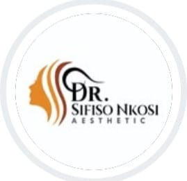
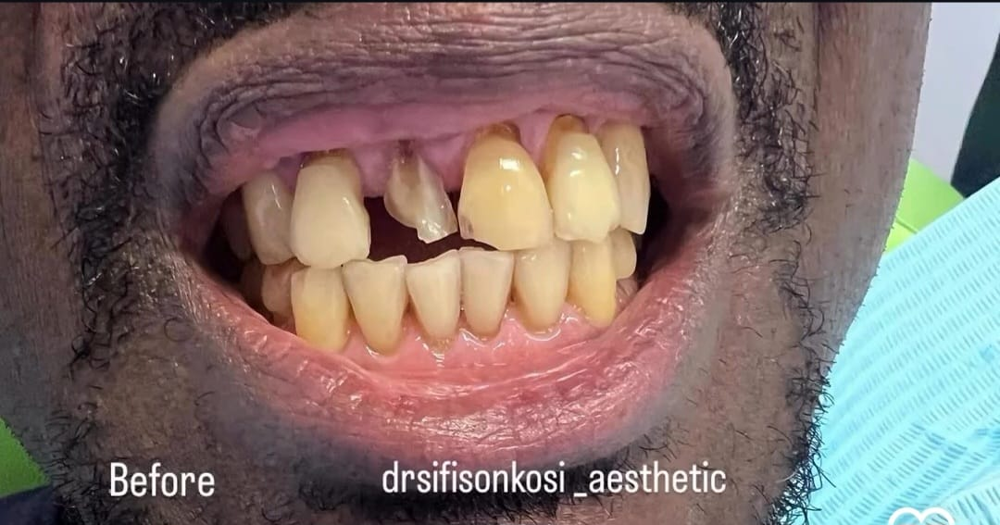
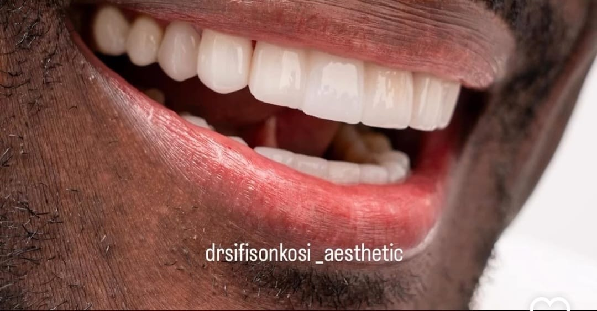
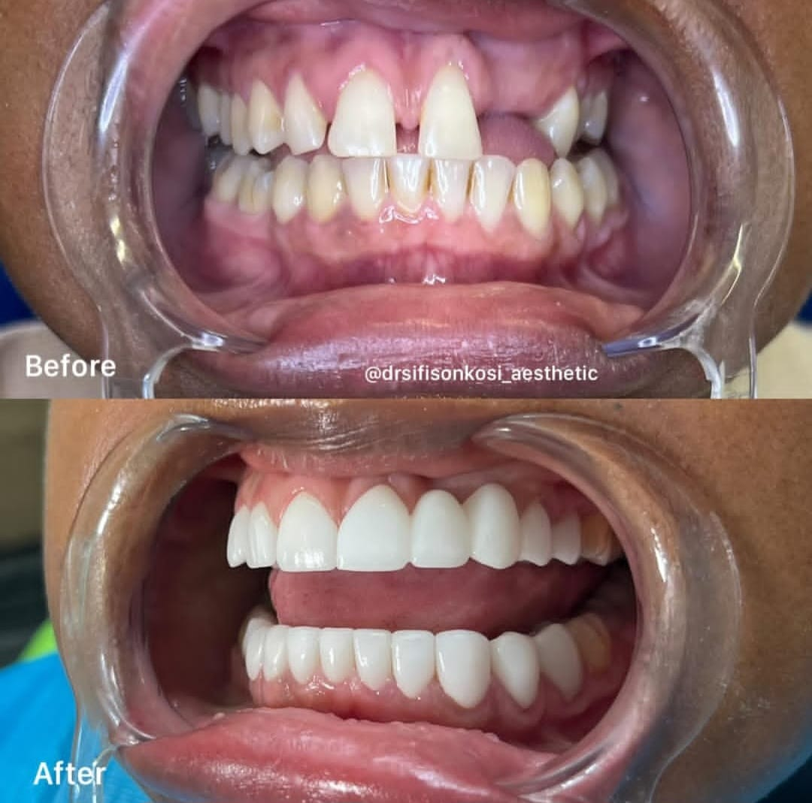
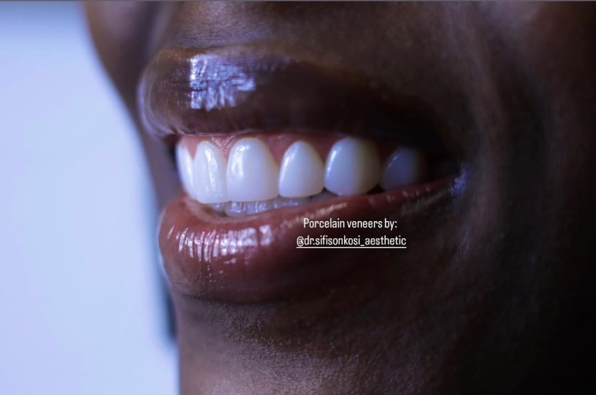
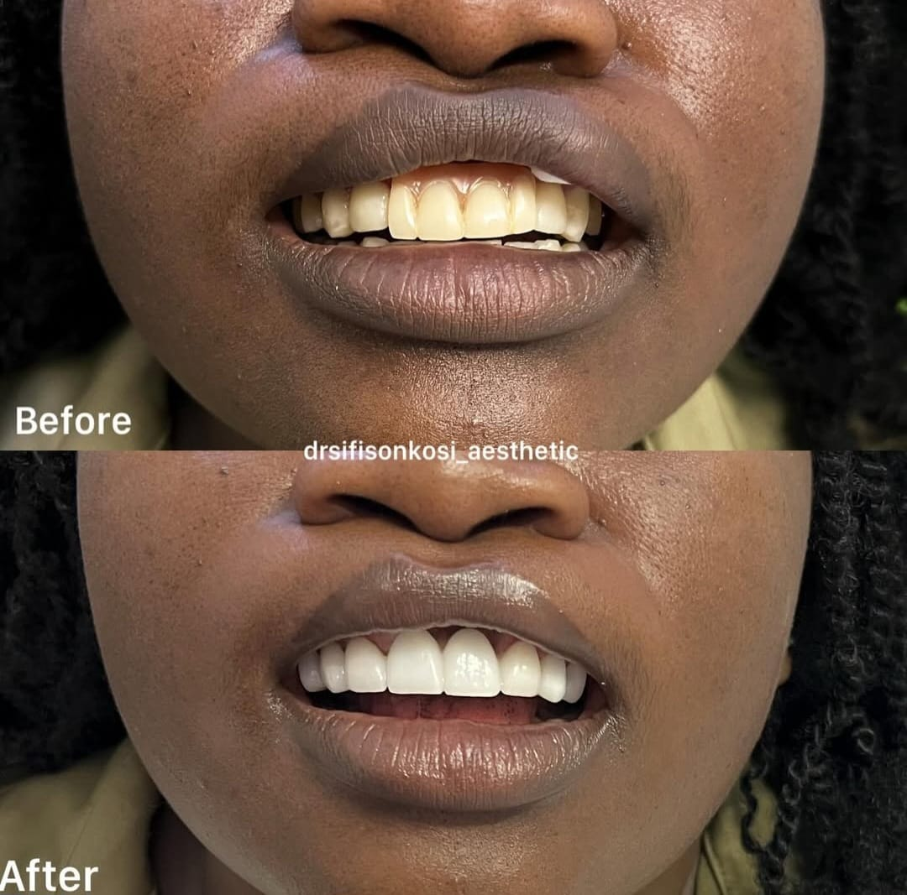
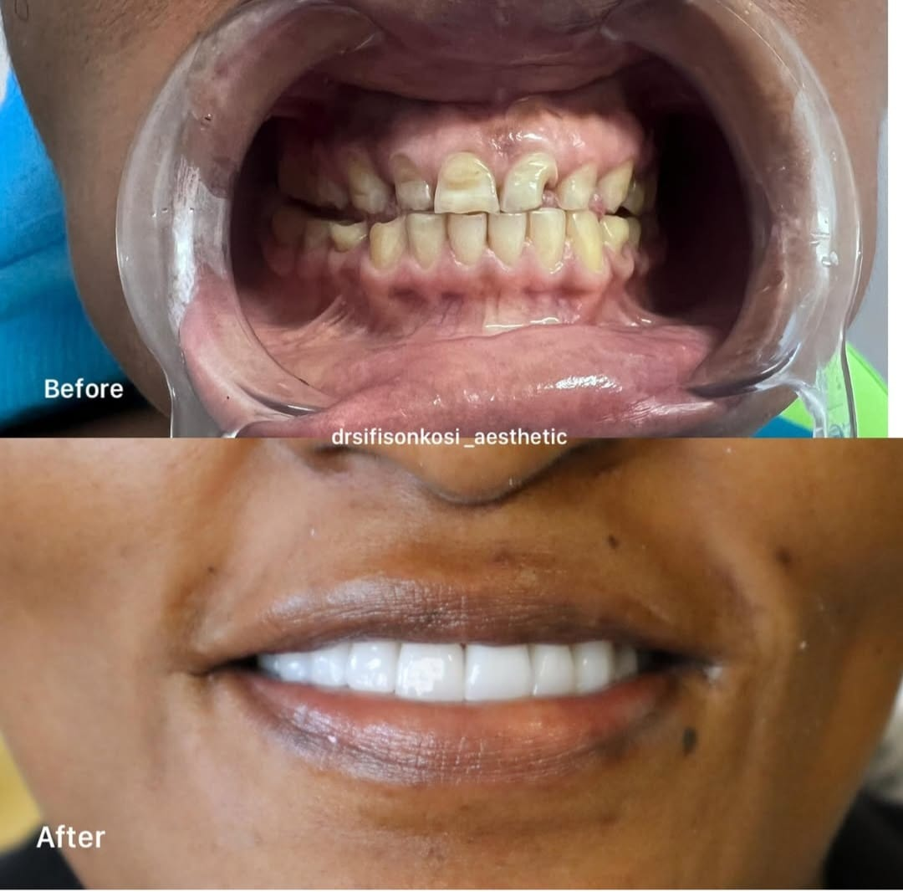
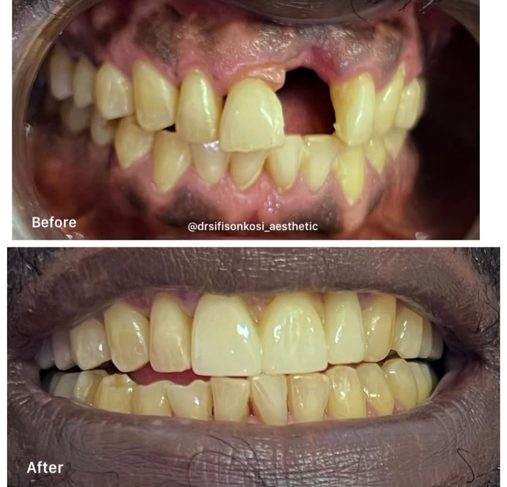
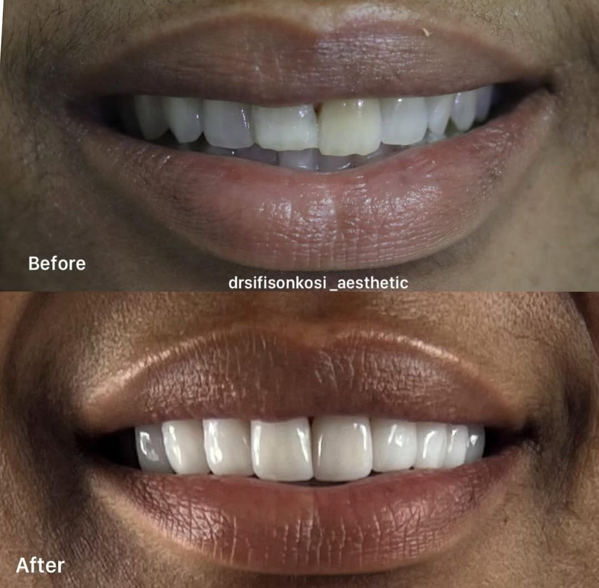

Porcelain & Composite Veneers
Custom-made veneers to improve colour, shape and symmetry while keeping your smile natural and age-appropriate.

Dr Sifiso Nkosi helps professionals, creatives and everyday people design confident, natural-looking smiles using modern, minimally invasive cosmetic dentistry.


Not just “nice teeth”. A personalised smile.
Every case starts with a detailed consultation, digital planning and honest advice about what will look best for your unique face, skin tone and lifestyle.
Serious about changing your smile?
This practice is for patients ready to invest in quality treatment,
not quick fixes.
Dr Nkosi is a cosmetic dentist with a special interest in smile aesthetics, veneers and minimally invasive restorative dentistry.
His approach is calm, detailed and honest: you’ll get clear explanations, realistic expectations and a treatment plan tailored to your goals, not a one-size-fits-all quote.
Whether you’re correcting worn teeth, closing gaps, or finally investing in the smile you’ve always wanted, the focus is always on natural, healthy-looking results.
Every smile starts with a full assessment. From there, Dr Nkosi will recommend the combination of treatments that will give you the best long-term result.
Custom-made veneers to improve colour, shape and symmetry while keeping your smile natural and age-appropriate.
Safe, supervised whitening to brighten your smile without damaging your enamel or causing unnecessary sensitivity.
A complete, step-by-step plan that may include veneers, whitening and other cosmetic treatment, all designed around your face.
High-quality fillings, crowns and bridges to rebuild worn, chipped or broken teeth while keeping them looking natural.
Options to close spaces and refine minor alignment issues for a more even, proportionate smile.
Regular reviews, cleaning and touch-ups to keep your treatment looking fresh for years.
Browse a selection of before-and-after cases from Dr Nkosi’s Instagram feed. Every case represents a real patient with a unique smile story.






See more detailed cases and videos on Instagram.
View full gallery on InstagramThe goal is to make the process clear and calm – from the first message to your final review.
Send a WhatsApp or complete the form below with clear photos of your teeth and your main concern. You’ll receive guidance on whether a consultation is the right next step.
Detailed assessment, photos and discussion of your options, including budget ranges, timelines and what’s realistically achievable.
Your treatment is carried out in stages with regular check-ins and aftercare. Final photos and review help you see just how far you’ve come.
Costs depend on the number of teeth involved, materials used and whether other treatment is needed first. You’ll receive a detailed, personalised quote after your consultation.
WhatsApp is perfect for initial guidance, but exact quotes are only given after an in-person assessment. This protects your results and avoids unrealistic expectations.
Dr Nkosi’s aesthetic focus is subtle, face-driven dentistry. The aim is for your smile to look like the best version of you, not like someone else’s teeth.
Some cosmetic procedures may not be covered. Please enquire via WhatsApp or at your consultation so the team can advise based on your specific plan.
Serious about improving your smile? Share a few details so the team can guide you on the best next step.